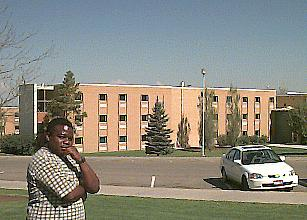

Men's Residences |
|
 |
There are two men's residences on campus, Rigby and Biddulph Halls. These newly remodeled halls provide sleeping rooms with two per room, a sink in each room, two desks, storage shelves and a large shower/restroom facility centrally located on each wing. Students eat at the cafeteria located in the Manwaring Center. There are three board-and-room plans from which to choose. Coin-operated laundry facilities and a lounge area are available in each building. |